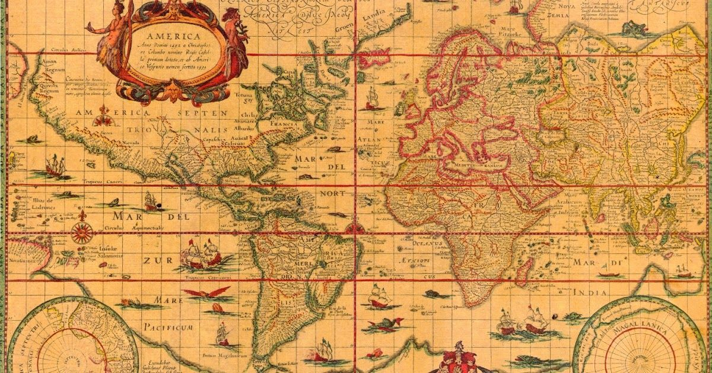
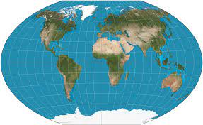

♦ World's Historical Maps
Ptolemy's World Map: Created in the 2nd century AD by Claudius Ptolemy, this map is one of the earliest surviving world maps from ancient times. It depicts the known world of Ptolemy's era, featuring Europe, Asia, and Africa, but with significant inaccuracies.

Medieval Mappa Mundi: These medieval European maps were often highly symbolic and religiously oriented, depicting Jerusalem at the center and featuring biblical events and mythical creatures. The most famous example is the Hereford Mappa Mundi.
Age of Exploration Maps: During the 15th to 17th centuries, European explorers ventured into uncharted territories, leading to the creation of maps documenting their discoveries. Maps by explorers such as Christopher Columbus, Vasco da Gama, and Ferdinand Magellan reshaped Europeans' understanding of the world.
Mercator Projection: Developed by Gerardus Mercator in the 16th century, this map projection revolutionized navigation by preserving angles, making it useful for sailors. However, it distorts the size of landmasses, particularly near the poles.

Colonial Maps: European colonial powers produced maps to assert control over newly acquired territories. These maps often ignored indigenous borders and geographical features, leading to disputes and conflicts.
Lewis and Clark Expedition Maps: In the early 19th century, the Lewis and Clark Expedition mapped the newly acquired Louisiana Purchase territory in North America. Their maps provided crucial information about the geography, flora, and fauna of the region.
19th-century Exploration Maps of Africa: European explorers mapped out Africa during the 19th century, leading to a better understanding of the continent's interior. However, these maps were often influenced by colonial interests and contained inaccuracies.
Regarding rivers, many have played pivotal roles in the development of civilizations and the flow of history:
Nile River: Often regarded as the cradle of civilization, the Nile played a crucial role in the development of ancient Egypt. Its fertile banks supported agriculture and allowed for the growth of cities.
Tigris and Euphrates Rivers: These rivers formed the heartland of ancient Mesopotamia, one of the earliest civilizations. They provided water for irrigation and transportation, fostering the growth of cities like Babylon and Ur.
Yangtze River: The longest river in Asia, the Yangtze has been integral to Chinese history and culture. It facilitated trade, agriculture, and transportation in ancient China.
Amazon River: The largest river in the world by discharge volume, the Amazon has been crucial to the biodiversity and ecosystems of South America. Indigenous civilizations have thrived along its banks for thousands of years.
Mississippi River: One of the major rivers of North America, the Mississippi has been vital for transportation, trade, and agriculture in the United States. It played a significant role in the westward expansion of the country.
]